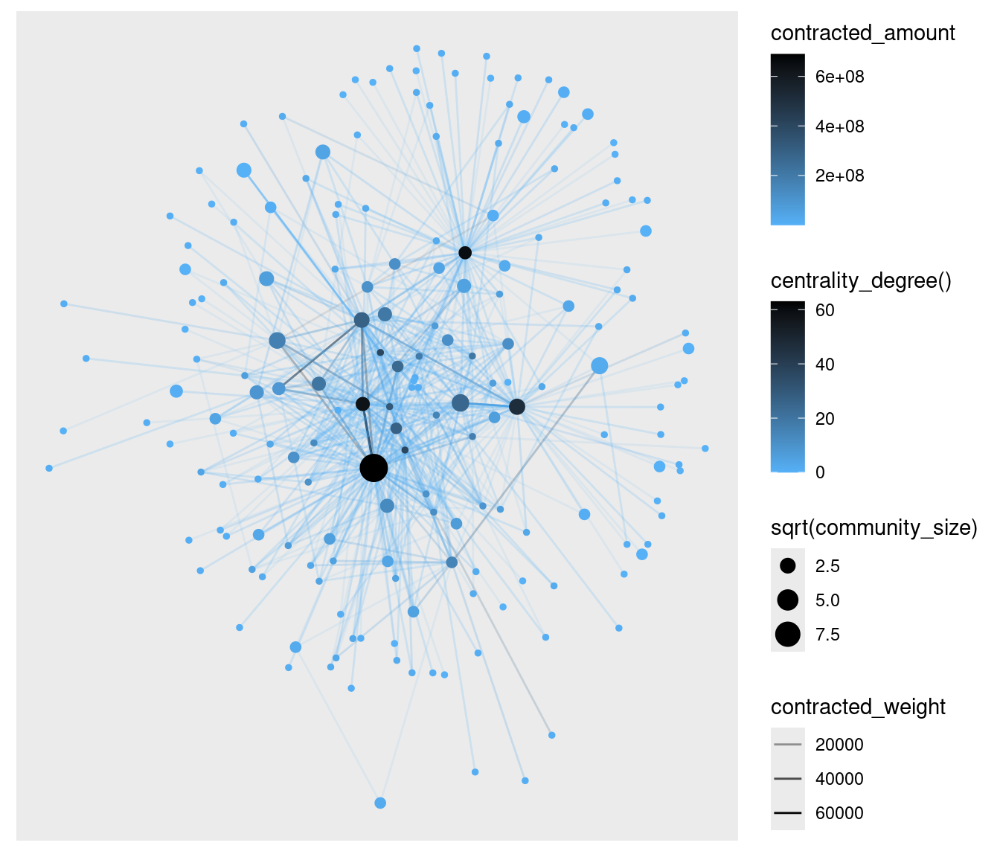
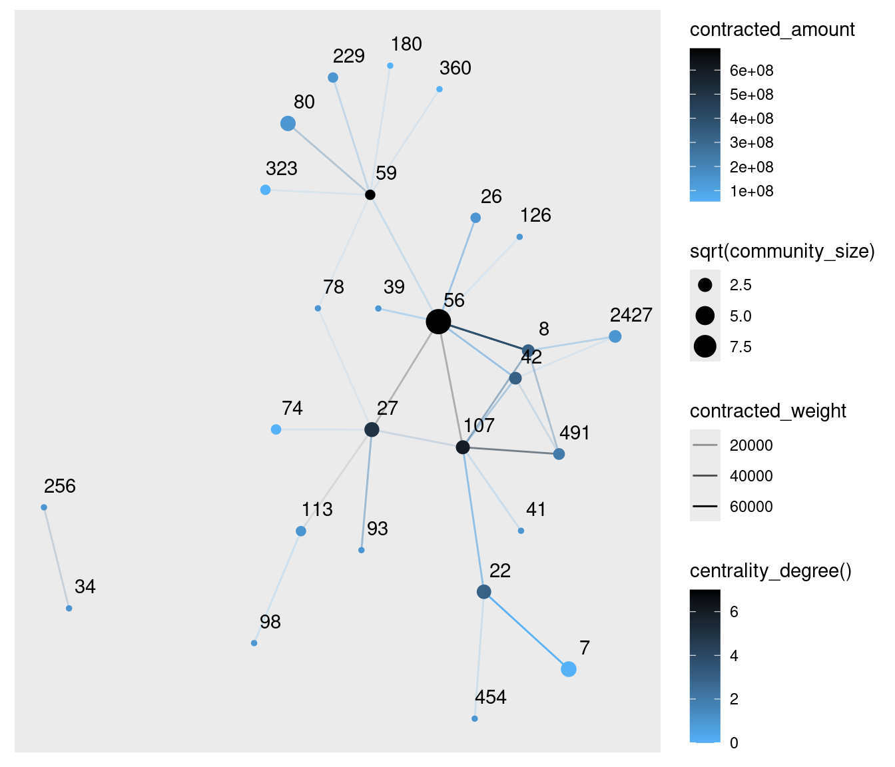

CREATE TABLE
makerdao_operations.dai_events_may2021to2022
PARTITION BY DATE (
block_timestamp
)
CLUSTER BY
makerdao_smartcontract,
makerdao_function
AS (
SELECT
block_timestamp,
makerdao_smartcontract,
makerdao_function,
to_address AS transaction_sender,
from_address AS transaction_reciever,
sender AS event_sender,
reciever AS event_reciever,
eth_value,
value,
percision
FROM `ethereum-explorer-354118.makerdao_operations.may2021to2022`
WHERE makerdao_smartcontract IN (
'DAI',
'DAIJOIN',
'GEMJOIN',
'JUG',
'POT'
)
)Network Mapping the Most Influential Addresses Using DAI (2021)
Introduction
Decentralized Autonomous Organizations (DAO) use the blockchain to conduct transparent corporate operations. One of the most successful DAOs to date is MakerDAO. Their staying power in the tumultuous environment of crypto is largely attributed to the wide adoption of their overcollateralized backed USD stable coin, DAI.
All blockchain transactions are public and pseudonymous. This gives unprecedented public transparency to the inner workings of blockchain based businesses and their products. In this report, I extract all DAI specific transfers of value and map influential addresses in an interactive network using ggraph and visNetwork to investigate key actors in the DAI ecosystem. I will outline my methodology and analyze the resultant networkmap.
Methodology
Using the MakerDAO events table I created, I subset all DAI events. Values were stored in BigQuery as hexadecimals because values were too large to store in BigQuery.
The subset table was imported into R and converted into decimal form according to the event specific degree of precision.
#clean data from extracted from google bigquery
data <- as_tibble(
read.csv(
file = 'dai_events_may2021to2022.csv',
header = TRUE,
colClasses = c("Date", "character", "character", "character",
"character", "numeric", "character"))) %>%
mutate(value =
ifelse (percision == 'wad', value/10e18,
ifelse (percision == 'ray', value/10e27,
ifelse (percision == 'rad', value/10e45, NaN)))) %>%
select(-percision)Finally, all transfer (of value) events pertaining to the DAI smartcontract were extracted.
#filter events to pull out only DAI transaction data
dai_transactions <- data %>%
filter(makerdao_smartcontract == 'DAI' &
makerdao_function == 'transfer')Before mapping a network, data had to be transformed into a form readable by network mapping packages. The node list was formed from unique senders and receivers. The edge list was formed from all transactions between unique addresses. Multiple transactions between the same addresses were counted as ‘weight’. Total transaction value was summed for each unique address pair.
#create node list (list of nodes with corresponding IDs)
node_list <- dai_transactions %>%
distinct(sender) %>%
full_join(distinct(dai_transactions, reciever),
by = c("sender" = "reciever")) %>%
rowid_to_column("id")
#check node list
node_list
#create edge list with count as weight and add value column
edge_list <- dai_transactions %>%
group_by(sender, reciever) %>%
summarize(weight = n(), amount = sum(value)) %>%
ungroup()
#convert edge list addresses into id specified in node_list
edge_list_byid <- edge_list %>%
left_join(node_list, by = "sender") %>%
rename(from = id) %>%
left_join(node_list, by = c("reciever" = "sender")) %>%
rename(to = id) %>%
select(from, to, weight, amount)
#check converted edge_list then remove original
edge_list_byidIt is not uncommon for a user to have multiple accounts which can skew network analysis if not accounted for. To alleviate the effects of this, I used the infomap algorithm to cluster addresses into communities. The rationale was that most alternate accounts would closely transact with each other forming distinct clusters. The infomap algorithm was used as it takes into account edge (trade) direction. In order to identified key nodes in the network, addresses’ eigenvector centrality was calculated using trade frequency as a weight.
#using the node_list and edge_list_byid we can create a
#graph object
graph <- tbl_graph(nodes = node_list, edges = edge_list_byid,
directed = TRUE)
#cluster nodes to find communities and centralities and rewrite graph object
graph <- graph %>%
activate(nodes) %>%
mutate(community = group_infomap(weights = weight)) %>%
mutate(centrality = centrality_eigen(weights = weight, directed = TRUE))As the DAI transaction dataset consists of over 1,500,000 transactions, addresses (nodes) were filtered for unique transaction pairs (edges) that were in the top 50% quantile for total transaction amount. Low value transacting nodes are unlikely to be key to the network. As I am looking for important actors in the network, I selected for the top 0.1% of addresses by eigenvector centrality. The selected addresses were collapsed on their communities.
#filter graph by centrality to reduce size by trimming data to visualize, value amount filtered to remove low value actors
#note this also reduces community sizing as low value actors are excluded
filtered_graph <- graph %>%
activate(edges) %>%
filter(amount > quantile(amount, 0.50), weight > 100) %>%
activate(nodes) %>%
filter(centrality > quantile(centrality, 0.999)) %>%
filter(!node_is_isolated())
#network is too large to be visualized so it will be contracted on its communities, weight and value will be summed
contracted_graph <- filtered_graph %>%
activate(nodes) %>%
convert(to_contracted, community) %>%
activate(nodes) %>%
mutate(community_size = map_dbl(.orig_data, ~ nrow(.x))) %>%
activate(edges) %>%
mutate(contracted_weight = map_dbl(.orig_data, ~ sum(.x$weight)),
contracted_amount = map_dbl(.orig_data, ~ sum(.x$amount)))contracted_graph <- readRDS("contracted_graph.rds")
contracted_graphThis graph was created by an old(er) igraph version.
Call upgrade_graph() on it to use with the current igraph version
For now we convert it on the fly...# A tbl_graph: 184 nodes and 968 edges
#
# A directed simple graph with 1 component
#
# Edge Data: 968 × 6 (active)
from to .tidygraph_edge_index .orig_data contracted_weight
<int> <int> <list> <list> <dbl>
1 1 2 <int [45]> <tibble [45 × 4]> 61537
2 1 3 <int [4]> <tibble [4 × 4]> 1777
3 1 4 <int [20]> <tibble [20 × 4]> 5699
4 1 5 <int [2]> <tibble [2 × 4]> 332
5 1 6 <int [13]> <tibble [13 × 4]> 4668
6 1 7 <int [15]> <tibble [15 × 4]> 13995
7 1 8 <int [2]> <tibble [2 × 4]> 493
8 1 9 <int [8]> <tibble [8 × 4]> 3170
9 1 10 <int [12]> <tibble [12 × 4]> 14052
10 1 11 <int [5]> <tibble [5 × 4]> 1281
# ℹ 958 more rows
# ℹ 1 more variable: contracted_amount <dbl>
#
# Node Data: 184 × 4
community .orig_data .tidygraph_node_index community_size
<int> <list> <list> <dbl>
1 56 <tibble [95 × 3]> <int [95]> 95
2 8 <tibble [4 × 3]> <int [4]> 4
3 72 <tibble [1 × 3]> <int [1]> 1
# ℹ 181 more rowsResulting network was graphed using ggraph. Node radius reflected community size and color reflected degree of connections (darker blue representing a higher degree).
#graph network
network_graph <- ggraph(contracted_graph, layout = 'igraph', algorithm = 'kk') +
geom_edge_link(aes(edge_alpha = contracted_weight, edge_colour = contracted_amount)) +
scale_edge_colour_continuous(high = '#000000', low = '#56B1F7') +
geom_node_point(aes(size = sqrt(community_size), colour = centrality_degree())) +
scale_colour_continuous(high = '#000000', low = '#56B1F7')
Though some tentative conclusions may be made about the general network, there are too many nodes to pick out key addresses. Only the highest valued transaction pairs were selected to keep the map readable.
#subset graph on value transacted to visualize high value connections (and importantly, visualize readable labels)
subset_graph <- contracted_graph %>%
activate(edges) %>%
top_n(50, contracted_amount) %>%
activate(nodes) %>%
filter(!node_is_isolated())
subset_network_graph <- ggraph(subset_graph, layout = 'igraph', algorithm = 'kk') +
geom_edge_link(aes(edge_alpha = contracted_weight, edge_colour = contracted_amount)) +
scale_edge_colour_continuous(high = '#000000', low = '#56B1F7') +
geom_node_point(aes(size = sqrt(community_size), colour = centrality_degree())) +
scale_colour_continuous(high = '#000000', low = '#56B1F7') +
geom_node_text(aes(label = community), position = position_nudge(x = 0.2, y = 0.2))
Community 56 looked to be the most promising community and was thus graphed. As addresses are long and cumbersome to read, I thought an interactive visualization may be more user friendly. Before mapping in visNetwork, community 56 data had to be transformed into a format visNetwork would accept.
#prepare data for visualization of community 56 in order to display addresses (sender) in a readable way
#create color palette for groups
palette <- as_tibble(brewer.pal(6, 'Set3'))
vis_edge_list <- community_56_graph %>%
activate(edges) %>%
arrange(desc(to)) %>%
as_tibble() %>%
mutate(arrows = 'to') %>%
rename(title = amount, value = weight)
vis_edge_list# A tibble: 86 × 5
from to value title arrows
<int> <int> <int> <dbl> <chr>
1 49 52 1 1200000 to
2 17 50 34 1614047. to
3 18 49 48 1403938. to
4 18 48 8 898990. to
5 18 47 20 1287273. to
6 18 46 3 836676. to
7 10 45 32 797796. to
8 17 44 20 2348153. to
9 17 43 53 1594078. to
10 28 40 14 1570956. to
# ℹ 76 more rowsvis_node_list <- community_56_graph %>%
activate(nodes) %>%
mutate(grouping = group_infomap()) %>%
as_tibble() %>%
select(-id, -community) %>%
rowid_to_column('id') %>%
rename(title = sender, value = centrality) %>%
mutate(label = "", color = case_when(grouping == 1 ~ '#FB8072',
grouping == 2 ~ '#FFFFB3',
grouping == 3 ~ '#BEBADA',
grouping == 4 ~ '#8DD3C7',
grouping == 5 ~ '#80B1D3',
grouping == 6 ~ '#FDB462'))
vis_node_list# A tibble: 54 × 6
id title value grouping label color
<int> <chr> <dbl> <int> <chr> <chr>
1 1 0x0000000000007f150bd6f54c40a34d7c3d5e9f56 5.98e-2 2 "" #FFF…
2 2 0xf7d9c9c06812c4a611a352ac82f638bdca6e09a8 2.00e-2 4 "" #8DD…
3 3 0xd0effc6828972483db1c64106f71d6ad12606a53 1.35e-2 4 "" #8DD…
4 4 0x2af33e93f68b8497bb535c492f5867c7e83f2bc4 4.82e-4 1 "" #FB8…
5 5 0xe592427a0aece92de3edee1f18e0157c05861564 4.47e-1 4 "" #8DD…
6 6 0x6c2d992b7739dfb363a473cc4f28998b7f1f6de2 2.19e-3 2 "" #FFF…
7 7 0x2a84e2bd2e961b1557d6e516ca647268b432cba4 9.11e-3 3 "" #BEB…
8 8 0x4a137fd5e7a256ef08a7de531a17d0be0cc7b6b6 1.65e-2 3 "" #BEB…
9 9 0x4d246be90c2f36730bb853ad41d0a189061192d3 2.61e-2 5 "" #80B…
10 10 0xbf3f6477dbd514ef85b7d3ec6ac2205fd0962039 1.05e-2 1 "" #FB8…
# ℹ 44 more rowsNetwork was mapped so that addresses would display on node mouse over and total transaction value would display on edge mouse over. Click lights up one degree of edges.
#graph dynamic network with prepared data
dynamic_network_graph <- visNetwork(vis_node_list, vis_edge_list, main =
"Transaction Network of Top 1% Most Influential Addresses Using DAI") %>%
visOptions(highlightNearest = list(enabled = TRUE, degree = list(from = 0, to = 1))) %>%
visInteraction(dragView = FALSE) %>%
visLayout(randomSeed = 11)
dynamic_network_graphAnalysis
To determine if my analysis picked out key players in the the DAI ecosystem, I checked to see if there were any exchange addresses. I expect exchanges would be central to the network because they deal in high transaction volumes and values. Indeed, I found 0x220bda5c8994804ac96ebe4df184d25e5c2196d4 and 0x1111111254fb6c44bAC0beD2854e76F90643097d. Both are smart contracts of 1inch, a popular DeFi aggregator. Sushiswap’s MANA-DAI pool, 0x495F8Ef80E13e9E1e77d60d2f384bb49694823ef, was among the addresses visualized. And finally, Uniswap’s V3 router 0xe592427a0aece92de3edee1f18e0157c05861564 was also present.
The more unknown addresses provided interesting insight into the users that hold up DAI. 0x1e3D6eAb4BCF24bcD04721caA11C478a2e59852D is one such mysterious address. Activity on this address stopped around May 2021 but beforehand seemed involved in high frequency trading of renBTC and wBTC. One explanation may be that this address was an arbitrage trader transacting in BTC derived cryptos. Their high DAI transaction values may indicate they used DAI as an arbitrage currency. DAI allows for fee-less flash-loans (loans that are instantaneously paid) making it very permissive for arbitrage traders.
References
Almende B.V. and Contributors, Thieurmel B, Robert T (2021). visNetwork: Network Visualization using ‘vis.js’ Library. R package version 2.1.0, URL https://CRAN.R-project.org/package=visNetwork
Google (2021). BigQuery. URL https://cloud.google.com/bigquery
Neuwirth E (2022). RColorBrewer: ColorBrewer Palettes. R package version 1.1-3, URL https://CRAN.R-project.org/package=RColorBrewer
Pedersen T (2021). ggraph: An Implementation of Grammar of Graphics for Graphs and Networks. R package version 2.0.5, URL https://CRAN.R-project.org/package=ggraph
Pedersen T (2022). tidygraph: A Tidy API for Graph Manipulation. R package version 1.2.1, URL https://CRAN.R-project.org/package=tidygraph
R Core Team (2021). R: A language and environment for statistical computing. R Foundation for Statistical Computing, Vienna, Austria. URL https://www.R-project.org/
Wickham et al., (2019). Welcome to the tidyverse. Journal of Open Source Software, 4(43), 1686, URL https://doi.org/10.21105/joss.01686